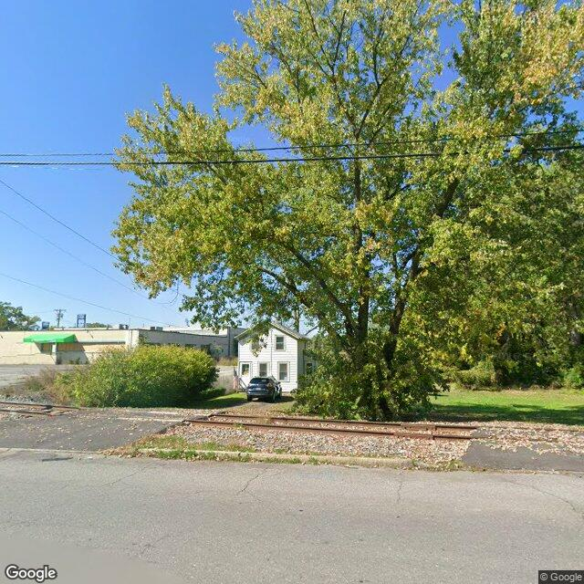

Property entry
819 Hiawatha Blvd E Rear
Published 2026-10-13T04:06:45+00:00
Parcel key: 0011-01-250

City records
Matches use parcel IDs, normalized addresses, or nearby coordinates. Confirm a match against the source record before relying on it. Publication dates are not source-data dates.
Vacant properties 0
No matches stored for this feed. The feed or address matching may be incomplete; this is not confirmation that no records exist.
Rental registry 1
- Latitude
- 43.0797366
- Longitude
- -76.160294
- NeedsRR
- Yes
- ObjectId
- 192
- PropertyAddress
- 829 Hiawatha Blvd E
- RR_contact_name
- Mark Dayger
Code violations 0
No matches stored for this feed. The feed or address matching may be incomplete; this is not confirmation that no records exist.
Unfit properties 0
No matches stored for this feed. The feed or address matching may be incomplete; this is not confirmation that no records exist.
AI image observations (unverified)
These observations are generated from an image, not an inspection or an official code finding. No human verification is recorded here.
Image capture date: Not recorded. The entry publication date does not establish the age of the image.
Automated image description
{"summary": "The image shows a property on Hiawatha Blvd E, with a well-maintained lawn and a healthy tree with yellowish leaves, suggesting it is late autumn or early spring. The tree appears to be in good condition with no visible signs of pests or disease. The lawn is kept short and is clear of debris. There are no visible issues in the image that would require further investigation.", "property_type_guess": "single-family|two-family|multifamily|commercial|mixed-use|vacant-lot|unclear", "visible_conditions": ["The property is well-maintained", "The lawn is kept short and is clear of debris", "The tree appears to be in good condition with no visible signs of pests or disease"], "condition_scores": {"roof": "good", "siding_or_facade": "good", "windows_doors": "good", "porch_or_entry": "good", "yard_or_lot": "good", "trash_debris": "none_visible", "vegetation_overgrowth": "none_visible"}, "visible_flags": {"boarded_windows_or_doors": "no", "fire_damage_visible": "no", "structural_damage_visible": "no", "vacancy_signs_visible": "no", "active_construction_visible": "no"}, "possible_unrecorded_issues": ["It is possible that the property could be vacant or undergoing maintenance, but there is no visible evidence of this in the image.", "image_annotations: 1. The tree is healthy with yellowish leaves, which indicates it is either late autumn or early spring. 2. The lawn is well-maintained and clear of debris. 3. There are no visible issues in the image that would require further investigation.", "needs_human_review: false", "confidence: high", "caveats: 1. The image is of good quality, providing a clear view of the property. 2. There are no obstructions in the image that would limit visibility, such as trees or bushes."
Property type guess: unclear
Visible conditions
- No items reported.
Condition scores
No structured condition scores available.
Visible flags
No structured visible flags available.
Possible image-only flags
- No items reported.
AI review boxes
- No items reported.
Review reasons
- No items reported.
Image quality
- Available
- True
- Bytes
- 124690
- Needs Rerun
- False
ACS tract context
Census Tract 1; Onondaga County; New York
- Housing units
- 816
- Median gross rent
- 353800
- Median household income
- 91696
- Poverty rate
- 11.3
- Renter-occupied share
- 7.8
- Total population
- 1225
- Vacancy rate
- 2.8
OpenStreetMap nearby
meter search radius
OpenStreetMap lookup failed: HTTP Error 406: Not Acceptable